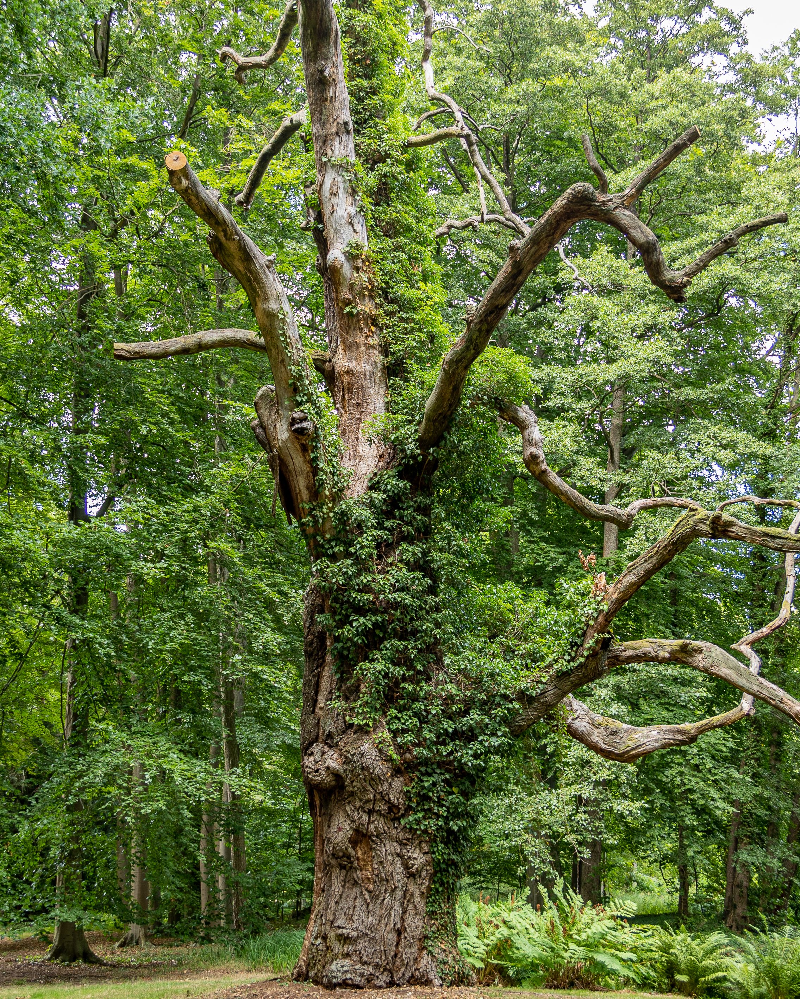
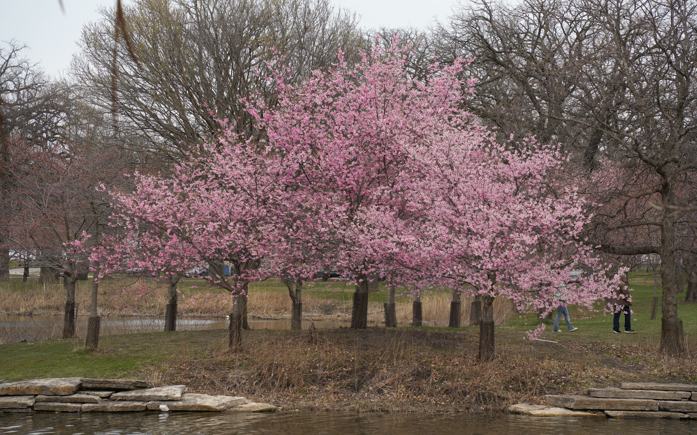
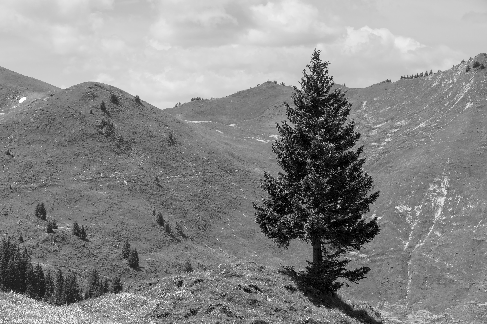
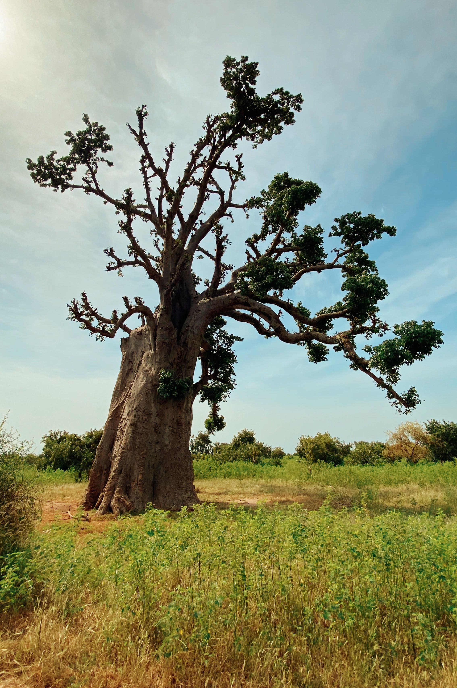
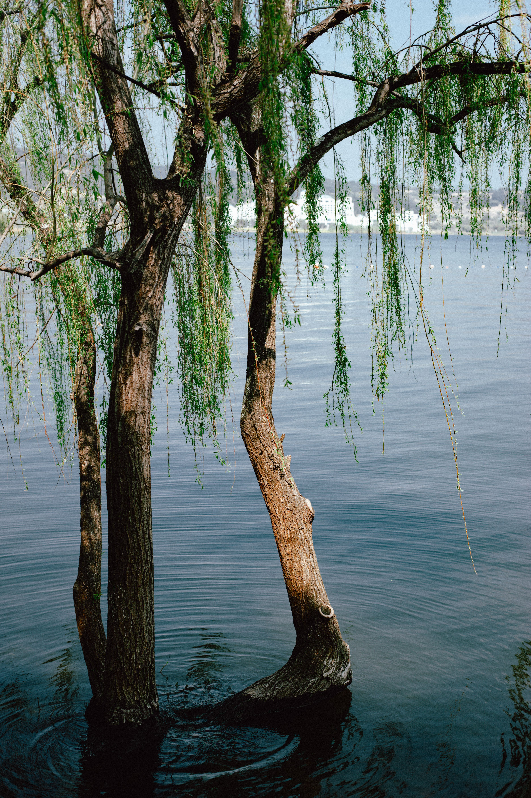
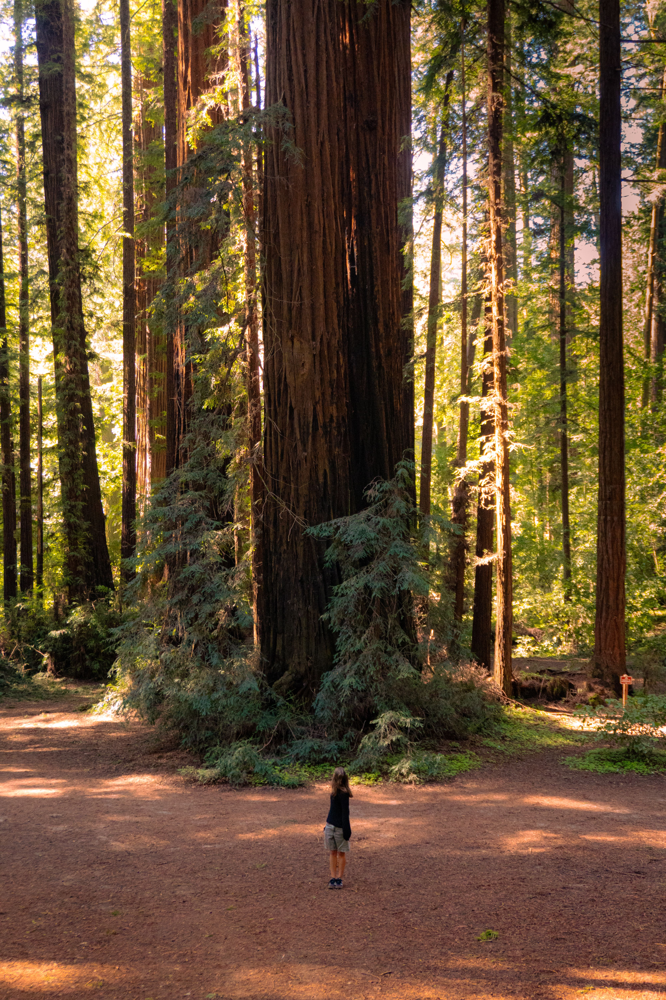
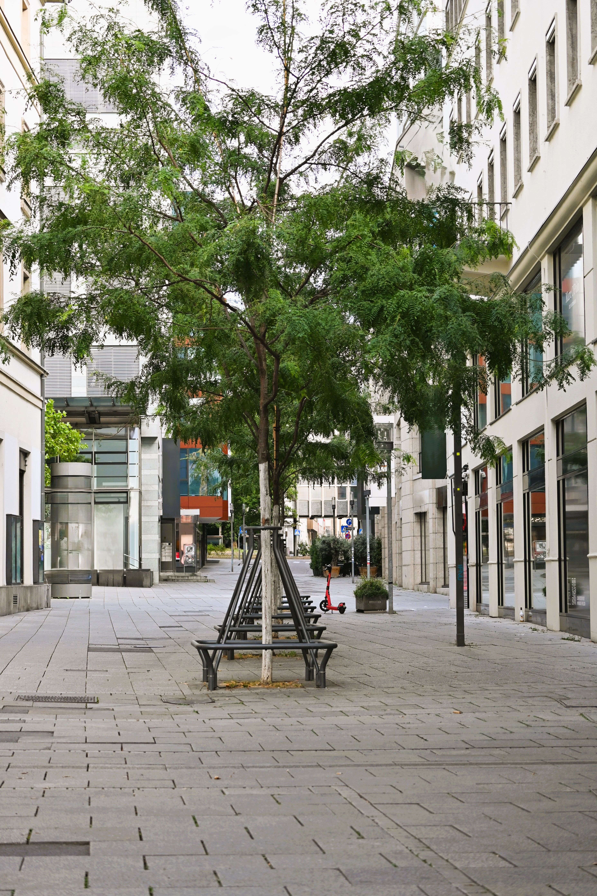

Welcome to the Department of Extremely Cool Trees! This gallery celebrates some of the most fascinating trees around the world. From ancient giants to colorful blossoms, every tree has its own unique appearance and story.
Trees are more than just part of the landscape. They provide habitats for wildlife, improve the environment, and create beautiful places for people to explore. Take a look at these nine remarkable trees and discover what makes each one special.






